Icon
Menu Name
Description


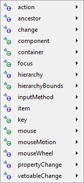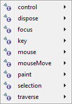
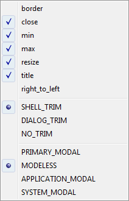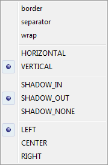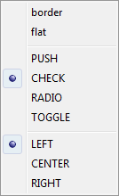
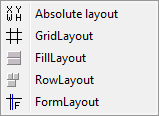
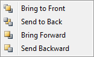
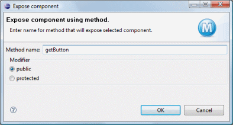
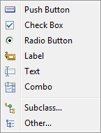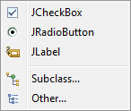
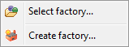
Rename the selected components and/or convert them to fields or local variables.
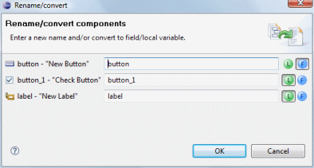
The Context Menu provides access to commands commonly used in the Design View and Component Tree.
Icon |
Menu Name |
Description |
|
|
Cut | Copy the selected components to the clipboard and remove them from the Design View. |
|
|
Copy | Copy the selected components to the clipboard. |
|
|
Paste | Paste the selected components from the clipboard. |
|
|
Delete | Delete the selected components from the Design View. |
|
|
Test/Preview | Preview the window using a quick test mode. This is ideal for testing the layout and resizing behavior of your components. |
|
|
Refresh | Re-parse the current source and refresh the Design View. |
| Add event handler > |
Implement an event handler for an event triggered by the selected
component. 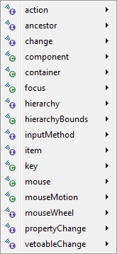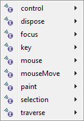 |
|
| Style > |
Change
the style of
the selected components. 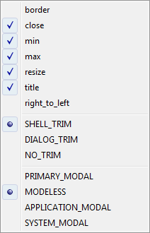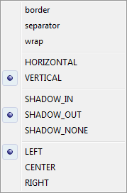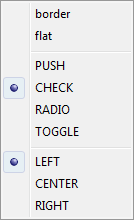 |
|
| Set Layout > |
Change
the layout of the selected container. 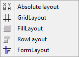 |
|
| Order > |
Change
the relative z-order of the selected component. Bring the widget to the
front, send it to the back, bring it forward or send it backward. The
command applies to absolute/null layout only. 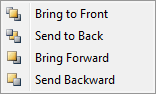 |
|
| Expose Component... |
Add a public
or protected accessor for the selected component. Components exposed in
superclasses or in
embedded panels can be selected and edited by the
user. 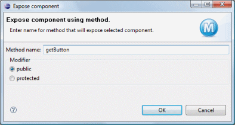 |
|
| Morph > |
Morph the selected components into
another type. Similar component types are listed. Direct subclasses of
the select component may also be selected as can any other arbitrary
class. 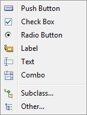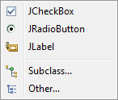 |
|
| Factory > |
Create a factory from the selected component or apply a factory to the
selected component. 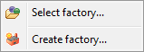 |
|
| Rename... |
Rename the selected components and/or convert them to fields or local variables. 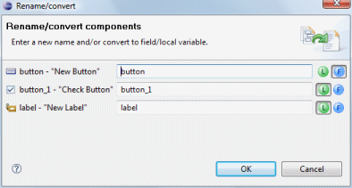 |